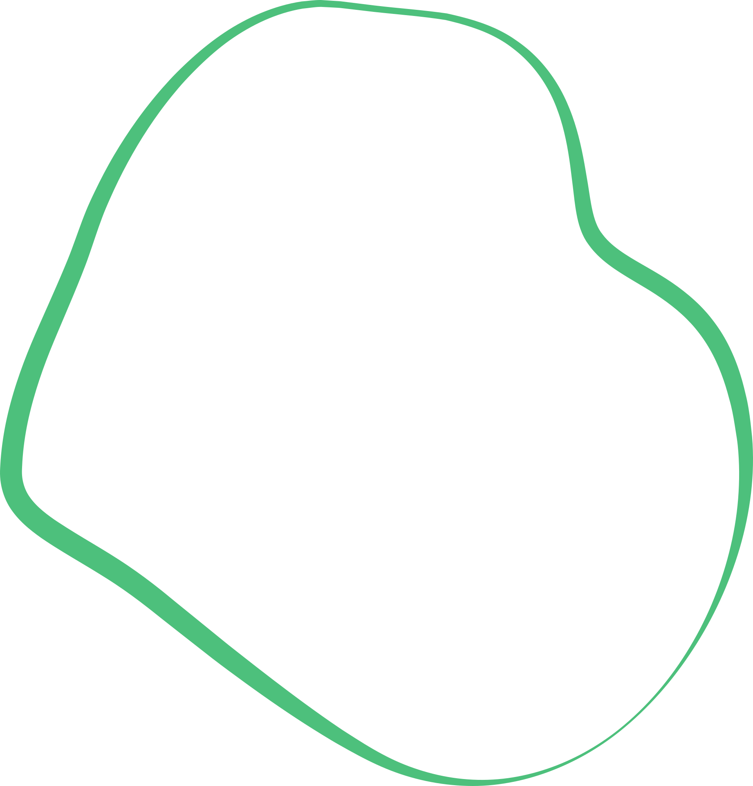
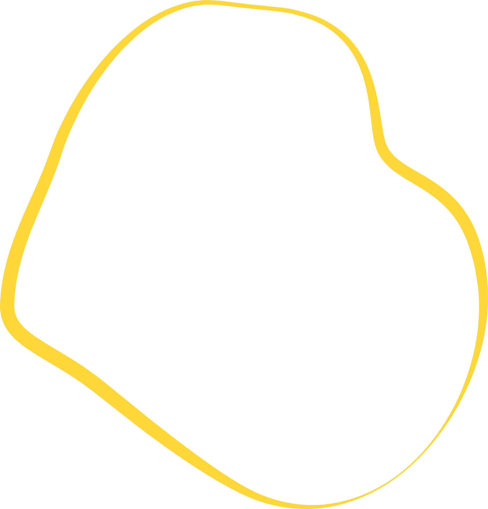

Pomoc druhým a zapojení do života komunity jsou skvělou prevencí proti osamění, pocitu marnosti a nemocem a přispívá k zlepšení postavení seniorů ve společnosti.
Více o seniorském dobrovolnictví


Každý z našich dobrovolníků má svůj příběh a motivaci, proč chce pomáhat. Nechte se inspirovat, přečtěte si ty nejzajímavější z nich.
Všechny příběhy„Penzista se nesmí nudit. Měl by si najít činnost, která ho zaměstná, obohatí sebe i své okolí.“

„Na otázku, co mi dobrovolnictví přináší, jednoznačně odpovídám, dobrý pocit a radost! Být dobrovolníkem jsem si předsevzal ještě před odchodem do důchodu, tak teď si to plním. Doučování a lektorství mi přináší radost z dosaženého pokroku doučovaných (nekladu si žádné velké cíle) a Společník seniora je jednoznačná dávka radosti, že senior měl z mé přítomnosti také radost a byl ochoten chodit i na procházky. Takže sečteno a podtrženo, mnoho radosti pro mne i ostatní.“

„V rámci základní životní filosofie je důležité dělat občas i nějaké věci zadarmo. Většina problémů jsou maličkosti. Pomocí někomu mi přináší pozitivní náladu.“

Více z našeho aktuálního dění naleznete na našich sociálních sítích Facebooku, Instagramu, YouTube a TikToku

Letokruh vznikl proto, aby dal lidem ve zralém věku možnost žít naplněný život. Předávat zkušenosti, čas a energii druhým, zažívat pocit užiteďnosti a respektu a získávat nové přátele. Možnost být sami sebou.
Více o násSeniorské dobrovolnictví je pro každého, kdo chce být navzdory věku aktivní a má chuť pomoci ve svém okolí. V Letokruhu seniorům dodáváme odvahu a jsme prostředníky na cestě k smysluplnému a radostnému podzimu života. Věříme, že věk je jen číslo. Proto u nás vítáme nejen seniory, ale i mladé dobrovolníky.
Vždy záleží na zájmu a přání dobrovolníka, ve které oblasti by se rád realizoval.


Quote text goes here...